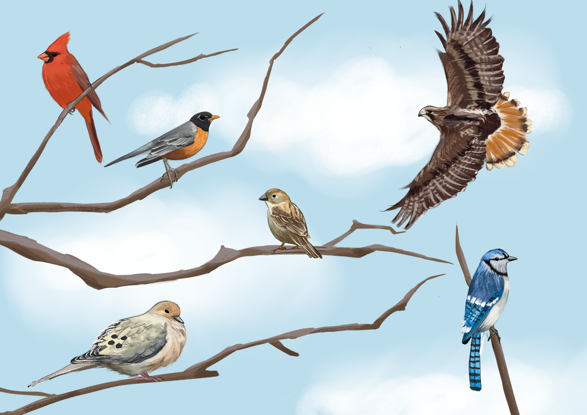
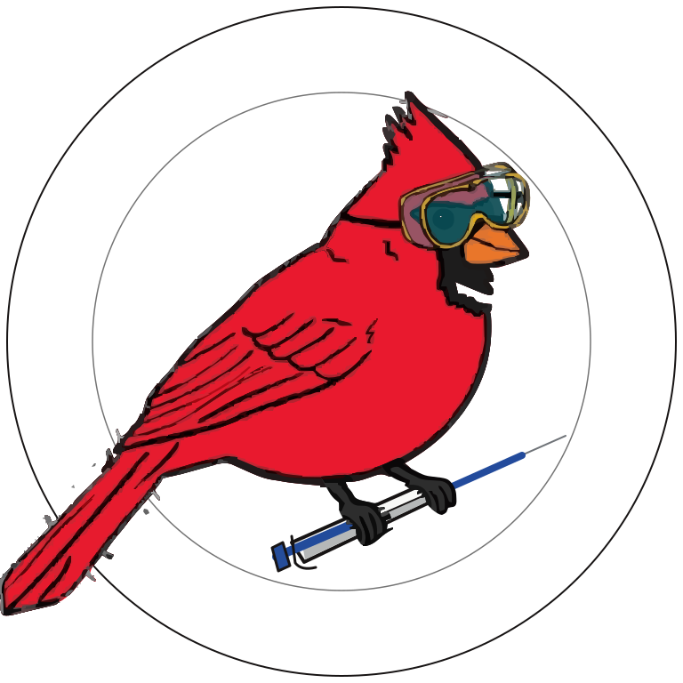

The Birds of Wesleyan and How To Find Them
The fall semester is in full swing. Classes are underway, walkways are filled, and hundreds of Cardinals have returned to campus.


The fall semester is in full swing. Classes are underway, walkways are filled, and hundreds of Cardinals have returned to campus.

Standalone Glaxnimate motion study. This page does not change the published site.